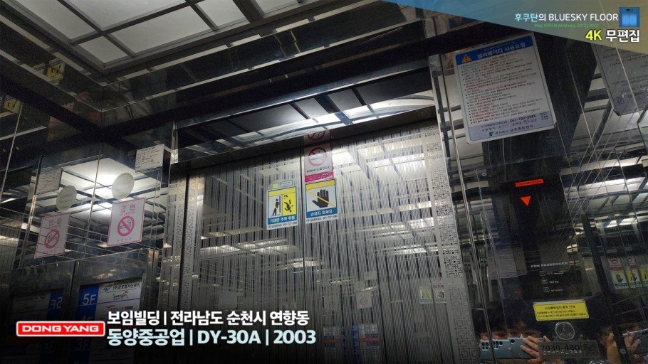

- cv
- dy
- tak-50
dy

이름의 유래는 Dong Yang(동양)을 줄여서 DY
도시바 기술 제휴를 끊어버리고 독자적으로 처음 개발한 모델들이다. 이 모델 출시 이후, CV 시리즈 모델들을 순차적으로 단종했다.
2003년, 티센크루프와 합병 후에도 계속 판매되었으나 2007년 말, DY 시리즈를 단종 시키고 TK 시리즈로 일원화 되었다. 이후에도 소수의 재고품이 이듬해인 2008년까지 판매되긴 했다.
안내방송 멘트는 기본적으로 상하행 및 도착시 층 안내만 나오지만 DY30A 출시 이후 설치분 중 드물게 문이 닫히기 전 해당 안내방송이 나오는 것도 있다.
해당 기종들을 시작으로 운행 중 급하강하거나 운행 중 갑자기 멈춰서는 고장현상이 발생한다. 원인은 불명.